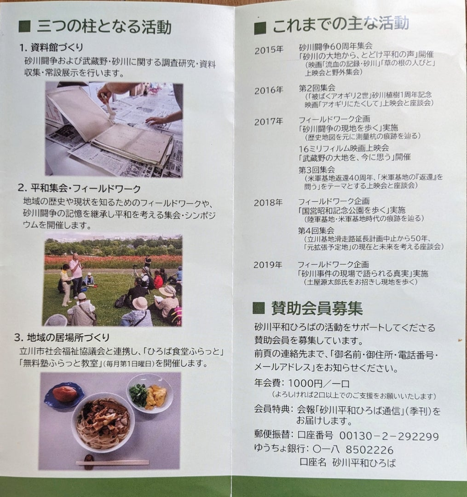
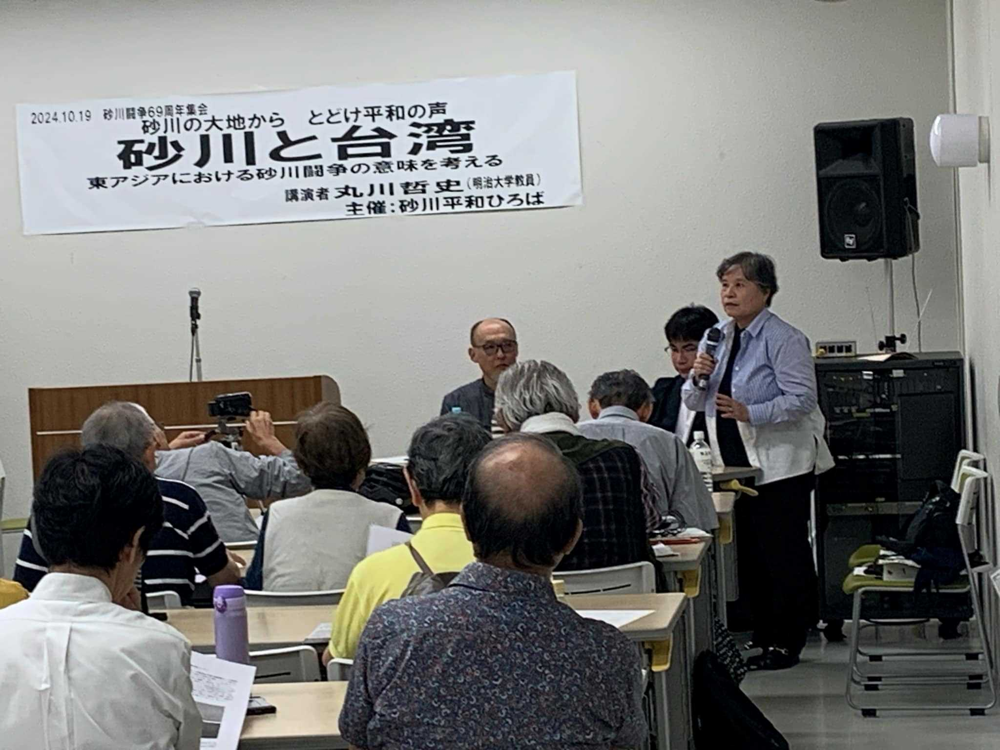

「砂川と台湾」——砂川平和ひろば集会レポート2024
「砂川と台湾」——砂川平和ひろば集会レポート2024. 2024年11月19日. 砂川平和ひろば公開記事アーカイブ. https://sunagawa-heiwa-archive.github.io/articles/ameblo-12875614541.html. Original: https://ameblo.jp/2021fukuoka-ameba/entry-12875614541.html
本ブログではこの秋、「砂川」を標題に掲げた２つの集会の告知を行いました。
ひとつは、「砂川と台湾――東アジアにおける砂川闘争の意味を考える」と題して、10月19日(土）午後に立川市のたましんRISURUホール（地階サブホール）で開催されたものです。
砂川平和ひろばが、2015年に「砂川闘争」60周年記念集会を企画して以来、「砂川の大地から とどけ平和の声」の思いをこめて、毎年秋に開催してきた集会の10回目にあたります。
来年（2025）「砂川闘争」70周年を控えての開催でもありました。
もうひとつは10月27日(日）に「国策をめぐる土地攻防――珠洲と砂川の「勝利」から学びなおす」というテーマで行われたもので、今年の元旦に大地震の発生した能登半島の珠洲と砂川をつなぐ企画でした。
こちらは砂川平和ひろばが直接関与したわけではありませんが、ひろばのメンバーが属する他の団体の主催・共催により、成城大学３号館の教室で、ドキュメンタリ―上映とトークを中心とするワークショップとして実施されました。
期せずして砂川と他のどこかが併記され対比された２つのテーマ設定を通して、どのような視座が開けたか、今後どのような展開がありうるか――２つの集会それぞれの概要をレポートしながら、考えてみたいと思います。
まず、１０月１９日の砂川平和ひろば秋の集会をふりかえってみます。
砂川と台湾――東アジアにおける砂川闘争の意味を考える

なぜ今、台湾か
砂川と台湾という取り合わせは、砂川平和ひろばの成り立ちと目的に沿って考えれば、決して突飛なものではない。
ひろばの拠点となっている小さな建物は、砂川の基地拡張反対同盟副行動隊長だった宮岡政雄さんが、「砂川闘争」の結果守りぬいた土地の上に建てたものである。
そこでの活動の柱となっているのが、パンフレットにも明記されているとおり、(1) 資料館づくり、(2) 平和集会・フィールドワーク、 (3) 地域の居場所づくり、である。宮岡さんが遺した大量の資料と写真の整理に取り組みながら、米軍基地拡張に抗った歴史を継承する反戦・平和の活動をとおして今日的なテーマと向き合う――その過程で砂川平和ひろばは、現地に根ざしながら内外の幅広い世代が出会う場となってきた。
{kind=link}

ひろばが保存する資料のなかに、宮岡政雄さんが台湾での軍隊生活を記した記録がある。
リアルタイムの戦時記録を含む台湾日記や、「私の履歴書」と題して戦後に書かれた回想記は、砂川闘争の前史ともいうべき戦中・戦後の歴史を、当事者の個人史をとおして学びなおすための稀有な史料といえる。
近年、中国の脅威と台湾有事を口実に、軍事費の増大や南西諸島のミサイル基地化が強行されているなかで、砂川平和ひろばが「台湾」をキーワードに平和を再考しようとするのは、それなりの因縁ゆえであり極めて意味深いのである。
以下の文中、「 」内は著者・発言者の文言の引用、〔 〕内は本ブログ筆者による挿入・補足であることを示す。
丸川哲史 講演「砂川と台湾－東アジア(新)冷戦危機をどう認識するのか―」
そのような集会の講師に選ばれたのが、明治大学教員の丸川哲史さんである。
台湾と中国大陸はもとより「両岸関係」と東アジアの現代史について、歴史研究だけでなく文学やサブカルチャーも含めた幅広い見識にもとづいて、過去と現在をつなぐ独自の視点を提示する講演は、とても示唆に富む内容だった。
特に注目したいのは、「東アジアの冷戦の起点としての1949年～51年」の「絡まり合う」歴史である。
日本が敗退した後の中国大陸では、国民党と共産党との国共内戦が、共産党の勝利に終わり、1949年10月1日、毛沢東は北京で中華人民共和国の成立を宣言した。蒋介石率いる国民党軍は台湾へと撤退し、台北を首都として中華民国を存続させた。
戦後処理や講和条約の締結は冷戦の影響を色濃く反映し、朝鮮半島は分断されて、1948年には南の大韓民国と北の朝鮮民主主義人民共和国〔以下、北朝鮮〕が、それぞれ成立していた。そして1950年6月に北朝鮮が南に侵攻すると、アメリカを中心とする国連軍が参戦して北上し、中国は「人民志願軍」を送ってそれを押し返し、熱戦が続いたのである。
丸川さんの言う「絡まり合う」歴史には、1949年の中華人民共和国の成立が、北朝鮮に開戦の決断をさせる要因となり、その朝鮮戦争によって新中国は「台湾解放を断念」したことが含まれる。台湾上陸を準備していた新中国は、朝鮮戦争へと方向転換せざるを得なかった。大陸に最も近い金門島にさえ攻め入らなかったのは、そこが台湾にとって中国との窓口になるようにという毛沢東の判断によるものでもあったらしい――そのような歴史のダイナミズムを、丸川さんは当事者への聞取りの成果なども交えながら語った。
日本は1951年に、中華人民共和国も中華民国も朝鮮半島の両国も除外した単独講和という形で、アメリカとの講和条約（及び日米安保条約）を結び、戦後の独立を果たした。「東アジアの冷戦国家群体制」に組み込まれたのである。
そこに砂川の歴史も絡む。戦後米軍に接収された立川飛行場は、朝鮮戦争中に米軍の極東最大の輸送基地だったと言われ、おそらく立川市は特需の恩恵を受け砂川はむしろ弊害を被って、その記憶も新たに1955年の基地拡張計画に反対することになる。
朝鮮戦争は1953年に「休戦」したものの、今なお終戦には至っていない。
ベトナム戦争中は、立川の米軍基地も貴重な中継地点となったが、1970年代に入るまでにアメリカの劣勢は明らかとなった。沖縄の施政権返還が実現し、急転直下の米中接近に乗じて日本は中国との国交を回復した。
中国は国連加盟を果たし、世界も日本も、中華人民共和国が中国を代表する政府であることを認めて、台湾の中華民国政府との国交は断絶された。
丸川さんの講演の力点は、その後1987年～1992年の「冷戦崩壊のプロセス」の方だった。
台湾は1987年に戒厳令を解いて民主化を実現し、中国では1989年の「6.4天安門事件」後に市場経済導入など改革開放が進んで、1992年には台湾との間に「両岸コンセンサス」が確立できた。
韓国も、1980年代後半からの民主化運動やソウル五輪を経て、1991年には中国との国交を樹立した。北朝鮮は1991年にソ連からの援助を停止するが、飢饉が深刻となり核開発をめぐる米国の「介入」の動きも生じた。
そして2003年の「六か国協議システム」においては、北朝鮮の「核」問題解決と同時に、朝鮮戦争の「終決」が目指されていた点が重要だった、と丸川さんは強調する。
ところが「六か国協議」に対して日本は、「拉致」問題への反発などから世論が冷やかで、2002年の「日朝ピョンヤン宣言」も今後どうなるか、懸念される。
「六か国協議」破綻以後の朝鮮半島の不安定化や、ロシア・ウクライナ戦争の勃発など、不安要因は多く、「台湾有事は日本有事」言説が蔓延する今の日本は、台湾同様に米中対立に引きずられるばかりである。
「砂川闘争」の帰結として米軍が去り立川基地が変換された後、自衛隊が移駐して、オスプレイの無謀な飛行や日米間の軍事行動強化によって、砂川も横田や沖縄・南西諸島の状況に危機感を抱かざるを得ない。
しかし丸川さんの講演からは、さまざまに絡まり合う要因によって歴史が大きく動く時はあり、そこには希望につながる変化もありうることが実感できた。そのような変化に備えて準備しておかなければならない、という丸川さんの言葉は、安易な楽観論ではなく、むしろ今の私たちに何ができるか何をなすべきかという重い問いを残したものと受け止めるべきかもしれない。
{kind=link}
講演中の丸川哲史さん
「朝鮮戦争に帰れ！」とは
丸川さんの講演を理解するキーワードのひとつが、「歴史の再構成」だった。それは、過去の歴史的事実は尊重し学びなおしながら、現在の文脈に照らして意味づけなおすことにつながる。
その意味で、丸川さんが2007年に発表した「朝鮮戦争に帰れ！」★は、「朝鮮戦争」の問い直しともいうべき貴重な論考である。朝鮮民主主義人民共和国〔この論文中ではDPRKと略称〕が、2006年10月に自国内で核実験を行った後に書かれたもので、朝鮮戦争の勃発について「DPRK側の開戦の決断理由」がより具体的に明かされている。そこに「核兵器の使用」というファクターも加わる。
1949年に国共内戦が決着した後「中国側から朝鮮人兵士、35,000人以上を、DPRK側に帰還させることが中朝間で取り決められた」という。それにより「朝鮮半島南北の軍事バランスが一変したことが」、DPRKに「開戦への決断を促したと考えられる」のだ。「その意味で…朝鮮戦争は、国共内戦の延長線上に位置づけられ……またそのためにこそ、結果的に中国は、初めから望んだわけではない朝鮮戦争への参軍をも余儀なくされ、また決定的にアメリカ合衆国との対立関係に入らなければならなくなった」のである★★。
そして中国の参戦によって苦戦したアメリカが、「原爆の使用」を持ち出すことになる。丸川さんによれば「中国の人民志願軍の参戦がなければ、おそらく原爆使用は検討されなかった」「この朝鮮戦争において意識された「核」への恐怖がその後、ソ連との対立を直接の動機としながら、中国の核実験をもたらし、また今日のDPRKの核実験をもたらしたのである」。
さらにもう一点、丸川さんは興味深い指摘をしている。
ソ連崩壊以前の冷戦という枠組みでは「超大国の核管理を前提とした…核抑止論が成立していた」が、「それが実質的に危うくなっていることは確か」で、「「核」の所有をめぐる論理構造は、かつての冷戦の超大国による二項対立を前提とした安定構造から、次第に中国を始めとした第三世界国家群へと順次下降しており」、国家による所有を超えて核が遍在すれば「「核」は無力になる」ということだ。
また、超大国や先進国家群とは違う条件のもとで核保有に追い込まれた国では、「高度な政治決断であったのだから、論理的には極めて主語のはっきりした放棄の決断もあり得るのではないか」、という点も考慮されている。
「あらゆる国家による「核」所有に反対し、それを廃絶させるための具体的な努力を進めながら、同時に「核」を所有する意味の蒸発する世界史的展望が今度どのように立ち現れるのか、また特にそれが、どのようにしてこの東アジアから連鎖的に立ち現れてくるのか、その突端を掴むべく理論的な作業も怠ってはならない」――それこそが、講演の最後で言及された「希望」の可能性であり、「準備」の必要性だったのではないだろうか。
「いわゆる六者協議とよばれる枠組みにおいて、その潜在的な交渉の主軸」は「中米間の交渉にある」、と丸川さんは言う。そして今の中国は、朝鮮戦争の頃とは「雲泥の差」の国際的地位を占めている。
それにしても変わらないのは、「150年ほどの日本、中国、朝鮮の成行きを見た場合に……それらのフォーメーションは、常に二項だけの関係を許さない歴史的・地政的脈絡にある、という事実」なのだ。
ならば、その相互依存性と歴史性にもとづいて、「「核」を持つことを余儀なくされた中国やDPRKの有する歴史的・地政的コンテクストに何度も立ち返り、その意味を汲み取ること」こそが、「朝鮮戦争に帰れ！」の真意であろう。
北朝鮮は、2006年10月に自国内で初の核実験を行って以来、2017年9月までに合わせて６回の核実験を行った。最近も韓国やアメリカ経由の情報として、7回目の実験の可能性が取りざたされている。
「主語のはっきりした放棄の決断」を下せる数少ない国家体制の北朝鮮が、朝鮮戦争以来の「核への恐怖」を払しょくできる日まで、それは続くのか。
私たちは核廃絶を諦めず、あらゆる国の核所有に反対の声をあげ続けなければならない。特定の国を「悪魔化」したくなる誘惑に負けては、何の解決にもならない。
★丸川哲史「朝鮮戦争に帰れ!--第二次朝鮮戦争と「核」を回避する力」
『現代思想』(特集=北朝鮮と向きあう ; 北朝鮮と向きあう)
2007年2月号(vol.35-2)p.78～90
★★ 丸川哲史自ら明記しているように、この論文中の朝鮮戦争開戦に関する記述は、以下の文献を参照している。
朱建栄『毛沢東の朝鮮戦争』（岩波書店、1991年）

閉会の挨拶をする福島京子代表
{kind=link}